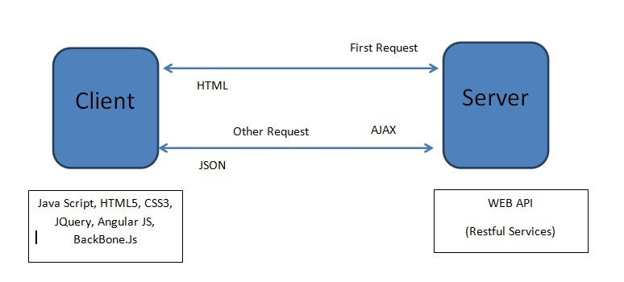

Arquitetura Tradicional e Moderna (SOFEA)
Lucas Almada de Andrade
RA: 0030482011019
Introdução
SOFEA é uma abreviatura de Service Oriented Front End Applications / Architecture,
que se refere a uma arquitetura de aplicativo da web em que todas as funcionalidades da IU são
fornecidas por Javascript ou lógica baseada em flash. Ele não interage com o servidor da web para
fornecer acesso aos dados em nível de aplicativo, mas interage com os serviços da web por meio do AJAX.
Essencialmente, você fornece toda a lógica da IU em uma única (ou poucas) páginas da web.
Essas páginas funcionam com serviços da web para acessar e atualizar dados.

Ideia básica da SOFEA
A ideia básica do SOFEA é que devemos parar o download do lado do
servidor e enviar essa responsabilidade para o lado do cliente. Propondo
remover toda a apresentação lógica do lado do serviço e movê-los para o
JavaScript e para o lado do cliente.
SOFEA concentra-se em mover a parte MVC para o
lado do cliente e usar o
lado do servidor apenas para processamento de backend. Nesta arquitetura, a
parte MVC pode ser desenvolvida usando HTML, CSS, JQuery (ou javacript) e
AJAX.
Mesmo há muitos frameworks, como Backbone.js, disponíveis para dar
suporte a essa arquitetura. A vantagem dessa abordagem é que a camada de
IU pode existir independentemente do lado do servidor (ou camada de serviço).
O lado do servidor é usado principalmente para processar a lógica de negócios
e permanece como uma camada de dados. REST (Representational State
Transfer) pode ser usado para comunicação entre a camada de IU e o back-end.
Benefícios da SOFEA
- Aqui estão alguns dos benefícios do SOFEA:
- Escalabilidade: O serviço tem menos trabalho e simplesmente processa a lógica de negócios.
- Melhor resposta do usuário e baixa latência: Depois que o aplicativo é baixado, apenas os dados trafegam.
- Modelo de programação organizado: É possível ter uma equipe apenas para o lado do cliente e outra para o lado do servidor.
- Interoperabilidade: Integração fácil com várias plataformas. Os clientes não importam para o idioma do serviço.
- É possível um ROI mais alto: Você pode reutilizar mais serviços.
- Aplicativos off-line: quando a rede falha, o cliente desacoplado pode alternar dinamicamente seus objetos de modelo.
- A camada de apresentação é desacoplada da camada de negócios, o que ajuda o aplicativo a obter uma resposta mais rápida.
- Executa em uma variedade de dispositivos.
- Muito bem suportado em ambiente de nuvem.